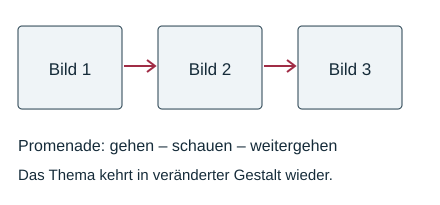

Die Promenade: von Bild zu Bild
Mit einem KI-Tutor lernen
Ein KI-Tutor erklärt dir diese Seite und hilft dir bei den Übungen. Wähl deinen Assistenten:
Mit Claude öffnen Mit ChatGPT öffnen Mit Mistral Vibe öffnen
Du nutzt dein eigenes Konto beim Anbieter. Der Assistent ist kein Angebot von lernapps.net: lernapps liefert nur Inhalte und Übungen. Die Wahl gilt für alle Seiten, nur auf diesem Gerät.
Ein musikalischer Spaziergang
- Promenade
Ein Spaziergang; in diesem Zyklus die Musik für den Gang des Betrachters zwischen den Bildern.
Du betrachtest ein Bild, gehst weiter und bleibst vor einem neuen Bild stehen. Diese Bewegung verbindet die einzelnen Eindrücke. Die Promenade kehrt mehrfach wieder, aber verändert: Stimmung und Instrumente können wechseln. Sie steht nicht nach jedem Bild.

Die Pfeile zeigen eine Verbindungsidee, keinen vollständigen Ablauf des Zyklus.
Quelle: eigene Zeichnung. Lizenz: CC-BY-4.0.Wiederkehr heißt nicht Kopie
In Ravels erster Promenade beginnt eine einzelne Trompete, weitere Blechbläser kommen hinzu. In einer späteren Promenade wird das Thema beispielsweise vom Horn gespielt. Ein wiedererkennbarer Gedanke kann also anders klingen.
Genau formulieren
Sage: „Die Promenade verbindet mehrere Bilder und kehrt verändert wieder.“ Vermeide: „Dazwischen kommt immer genau dieselbe Aufnahme.“
Übung
Übung
Lösung
Den Gang des Betrachters zwischen Bildern richtige Antwort
Das wiederkehrende Thema begleitet den Ausstellungsrundgang.
Den schweren Schritt der Ochsen
Der schwere Wagen wird im eigenen Bild Bydło dargestellt.
Den Gesang vor einem alten Schloss
Das gehört zur Szene des Alten Schlosses.
Die Promenade verbindet Teile des Rundgangs musikalisch.
Mehr dazu:
Übung
Lösung
Richtige Antwort: Das Thema ist wiederzuerkennen. – Wiederkehr; Besetzung oder Stimmung wechseln. – Veränderung; Der Betrachter geht zum nächsten Bild. – Außermusikalischer Inhalt
Die Promenade verbindet Wiederkehr und Veränderung mit der Vorstellung eines Spaziergangs.
Mehr dazu:
Offene Aufgabe
Erkläre in zwei bis drei Sätzen, warum eine wiederkehrende Promenade trotzdem unterschiedlich klingen kann.
Eine gute Antwort enthält:
Lösung
Die Promenade stellt den Gang zwischen den Bildern dar. Ihr Thema kehrt wieder, kann aber von anderen Instrumenten und mit anderer Stimmung gespielt werden. In Ravels erster Promenade beginnt zum Beispiel eine Trompete.